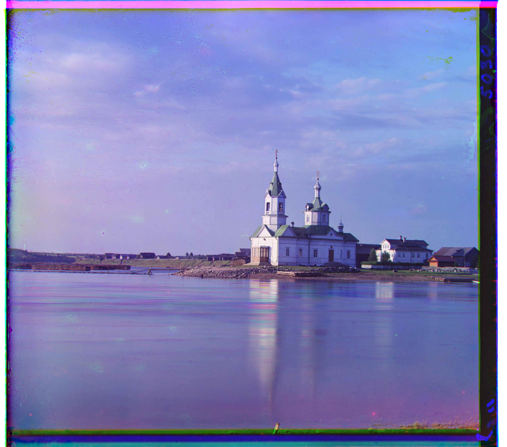
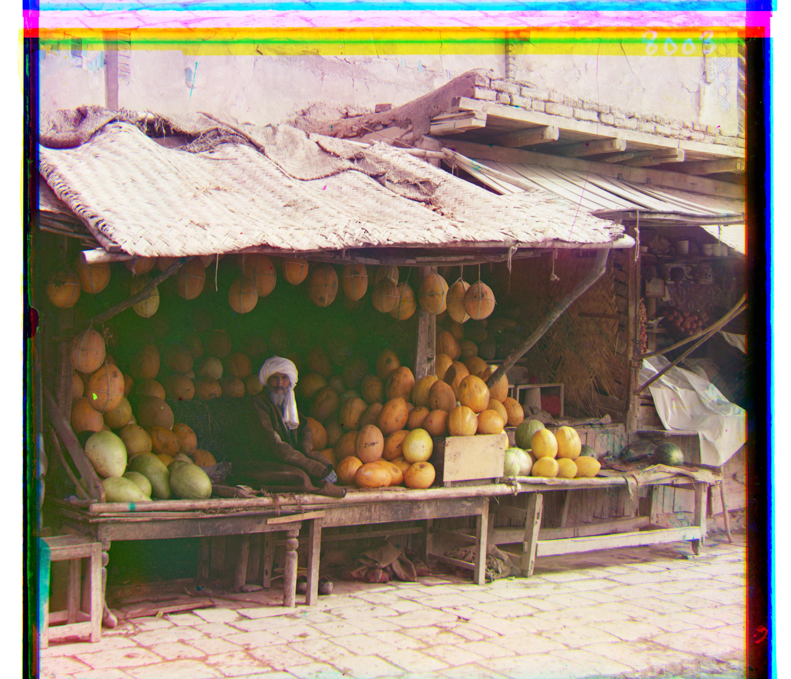
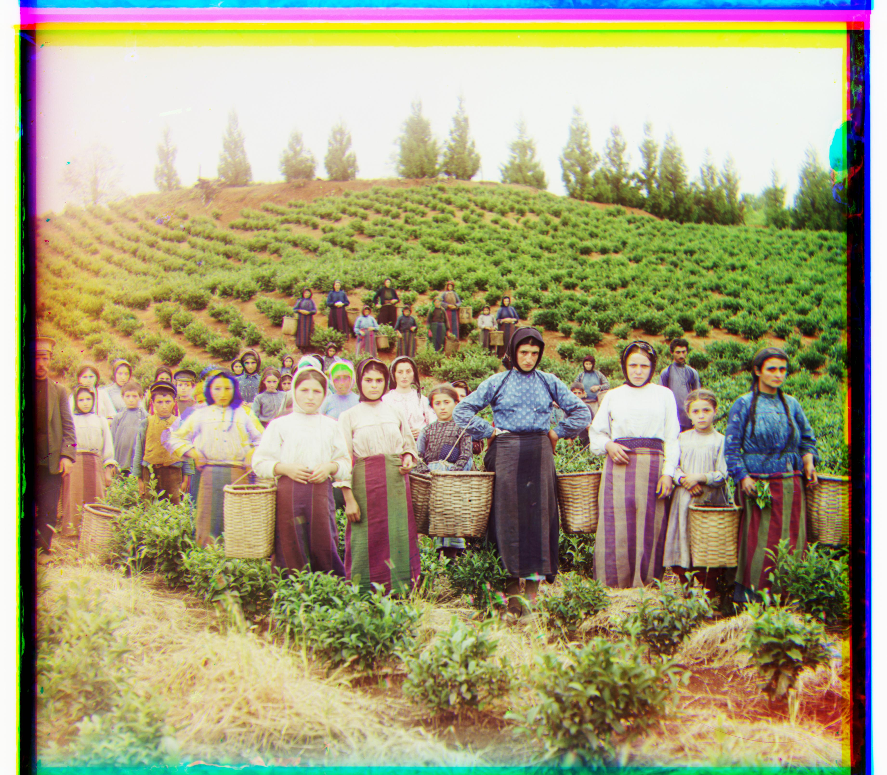
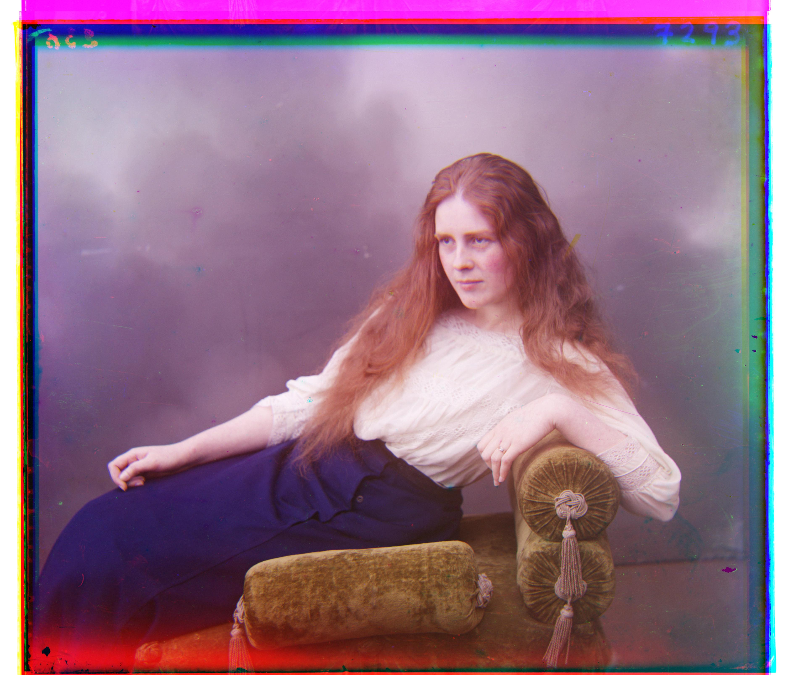

Hello, here is things.
These images are small enough for us to simply search through them one-by-one to find the best match.
These images are far too big for us to look at all elements. Here we must use a pyramid in order to get results quickly
As a part of the extra bells and whistles, we can add cropping. For cropping, the mindset was that we would rather remove less if it means preserving 'important' information. For example, the bars are not always straight, and therefore there may be parts of the image that may be lost if we are to cut further down. This is why some but not all of the colored bars are removed. This implementation is based off of the simple observation that borders are mostly just black lines, or deviate little from black lines. Therefore, we can place a threshold on the variance of the pixel values until it reaches a certain point. Although it is not a problem for these images, we also kept a maximum possible area of cutoff as to prevent searching too far and either cutting too much or spending needless time doing computations.

With cropping:
With cropping:
In these examples, we can see some of the black and white borders as well as some of the colored borders being chopped off. Our approach is relatively conservative in terms of the method and threshold.
This section concerns only one image in particular, that being of emir.tif, as it is the only one notably impacted by this change, besides maybe the train. In order to explain why this is the case, we must explain the original implementation. Before, we made use of normalized-cross-correlation, which worked as a suitable measure as it managed relative differences better than other ones like l2 or l2 distance. This however caused a problem because the man's outfit was very blue in this picture, and thus there is a huge area in the slide with a mass of large values for the blue layer, and none for the red. Therefore the program would be way off, as it would try to align his outfit with the door or his beard, which have more red and green. To fix this problem, we can make use of an edge detection kernel and a convolution. Here we take both a vertical and horizontal edge detector kernel, sum the output, and then run the alignment function on that. We see a massive improvement in emir. Moreover this made some improvements on train, as this image would have trouble on smaller pyramids prior to this adjustment.
Now with edge-detection:
This one is a purely aesthetic change, and so viewer is the judge as to if it is preferable or not. Here we convert the image to YCrCb and use the value of Y as our measure of contrast. We then linearly scale all values accordingly and then convert back. We see overall this has the effect of making things darker and moodier.
Without Contrasting:
Without Contrasting:

Without Contrasting:
Without Contrasting:
Without Contrasting:
Without Contrasting:

Thank you